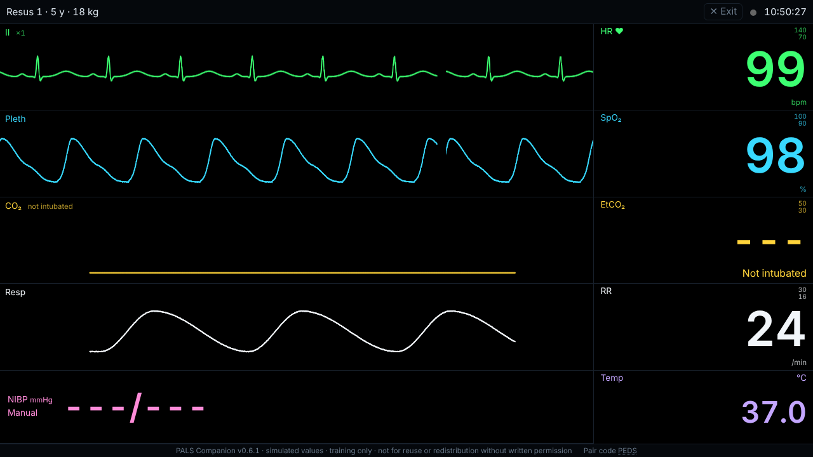

PALS Companion
Turns any laptop or projector into a simulated pediatric bedside monitor. The instructor controls rhythm, vitals, CPR and shocks live from a phone, so a manikin or a mock code becomes a realistic scenario.

What it does
Realistic rhythms
Sinus, SVT, heart blocks, VT with and without a pulse, torsades, VF, asystole and PEA.
Physiology that teaches
Heart rate counts compressions during CPR, EtCO2 follows CPR quality and rises on ROSC, and PEA gives no rhythm alarm.
Ready scenarios
Staged cases with instructor-only cues, weight-based doses and expected-action checklists.
Automatic debrief
Time to CPR, first shock, adrenaline timing, CPR fraction and a full timeline to show, copy or print.
Exam mode
Alarms say only “ALARM”, so the team has to read the rhythm themselves.
Nothing to install
Pair the two screens with a QR code. No accounts, and it keeps working offline once opened.
For education and simulation training only. Not a medical device, and never for use with real patients. “PALS” is a programme of the American Heart Association; PALS Companion is independent and not affiliated with or endorsed by the AHA.